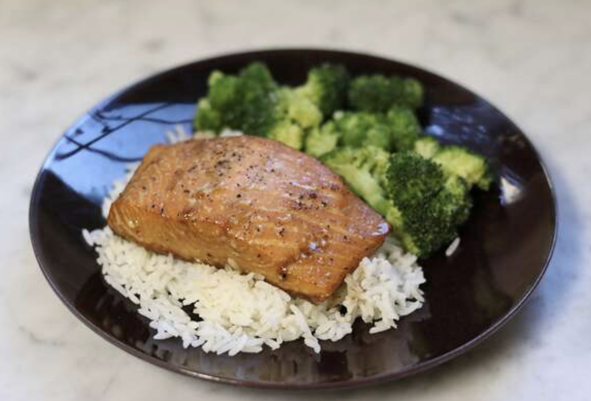

Grilled Salmon Recipe

Description:
A simple soy sauce and brown sugar marinade, with hints of lemon and garlic, are the perfect salty-sweet complement to rich salmon fillets. Even my 9 year old loves this recipe!
Ingredients:
- soy sauce
- brown sugar
- water
- vegetable oil
Steps:
-
There are plenty of delicious ways to marinate fish for grilling, but we're partial to this sweet and savory salmon marinade: Salmon filets are seasoned with lemon pepper, garlic powder, and salt, then marinated.
-
Season and marinate the salmon for at least two hours in the refrigerator. Preheat a grill and lightly oil the grate. Place the salmon on the grill and discard the marinade. Cook on each side until the fish flakes easily with a fork. Enjoy!
Return to main page